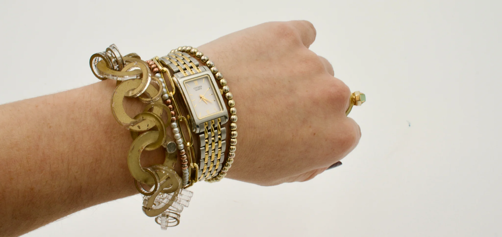
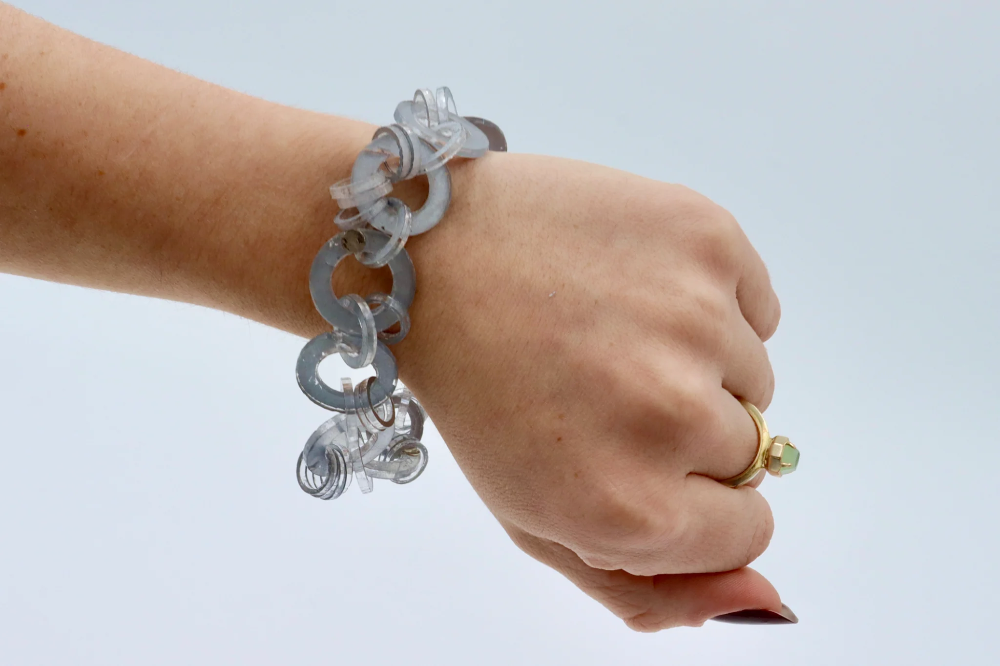
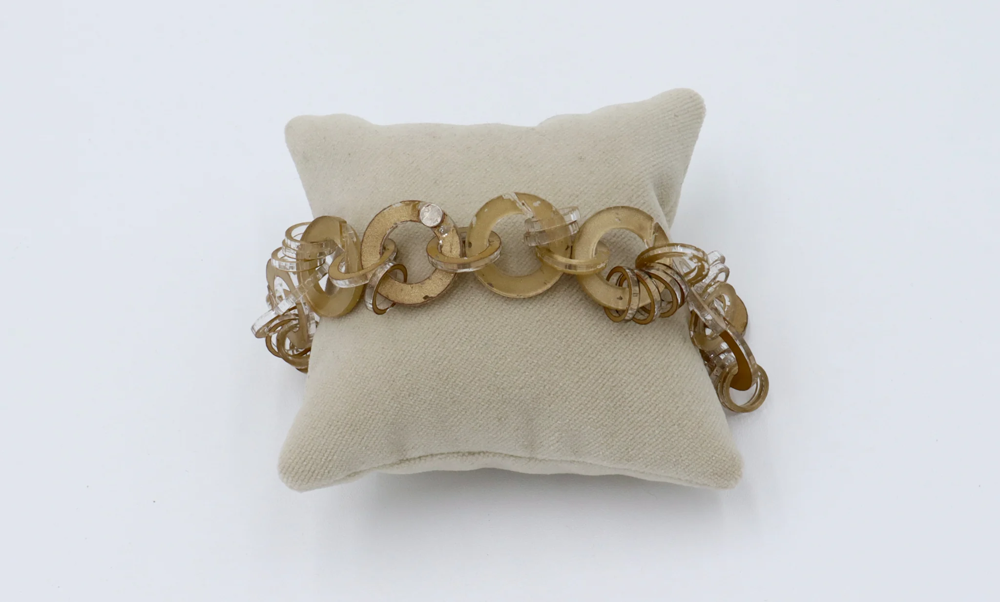
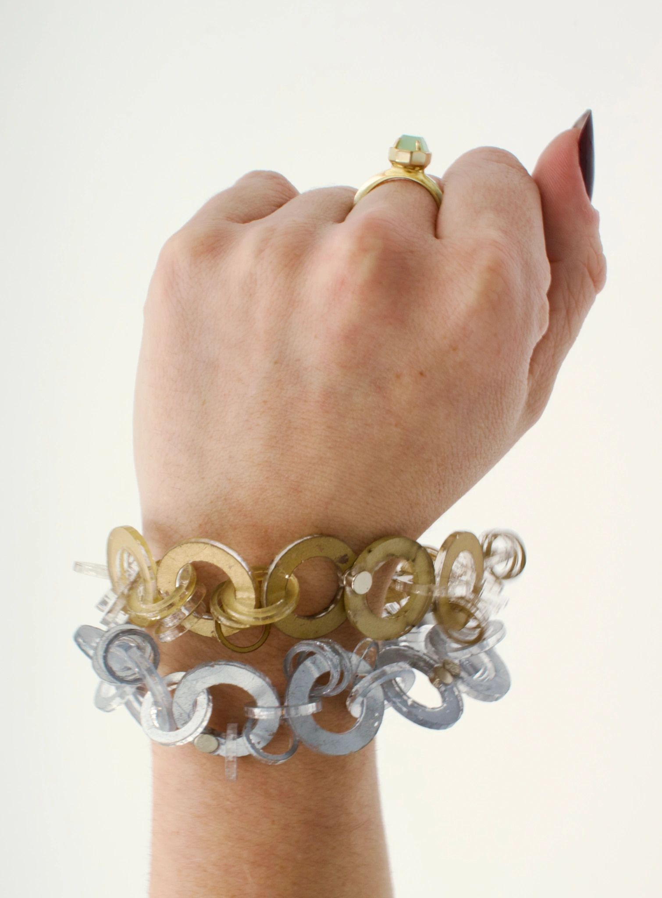
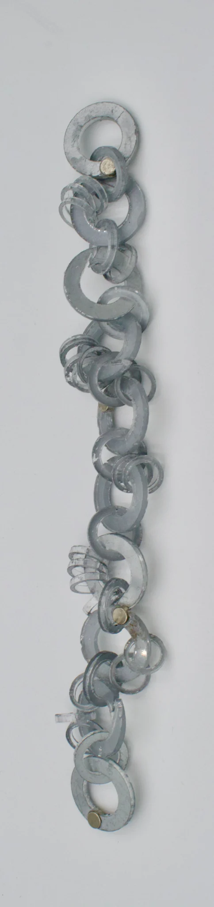
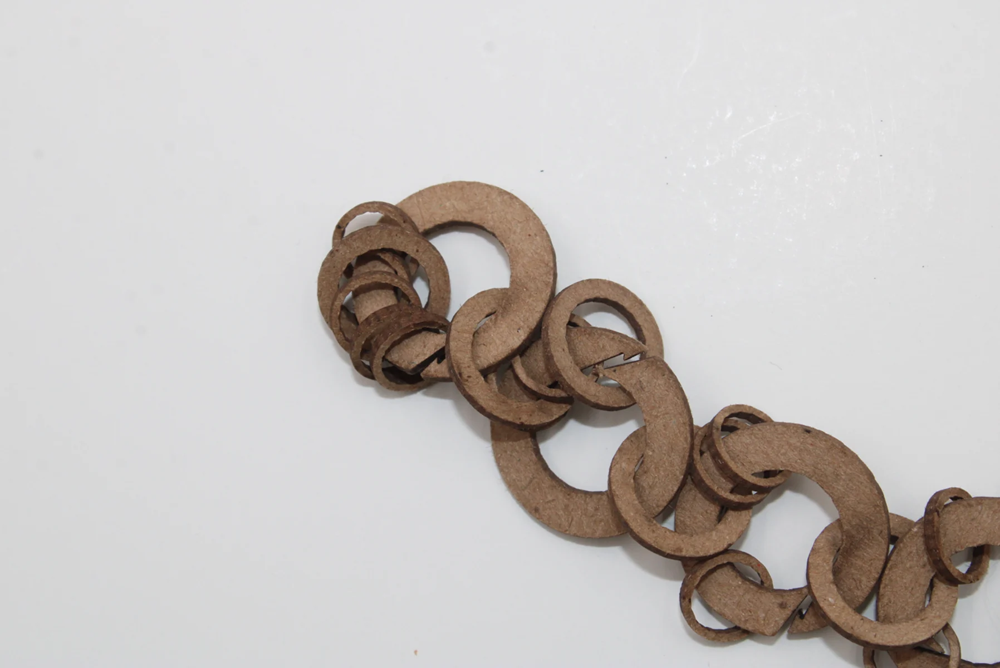
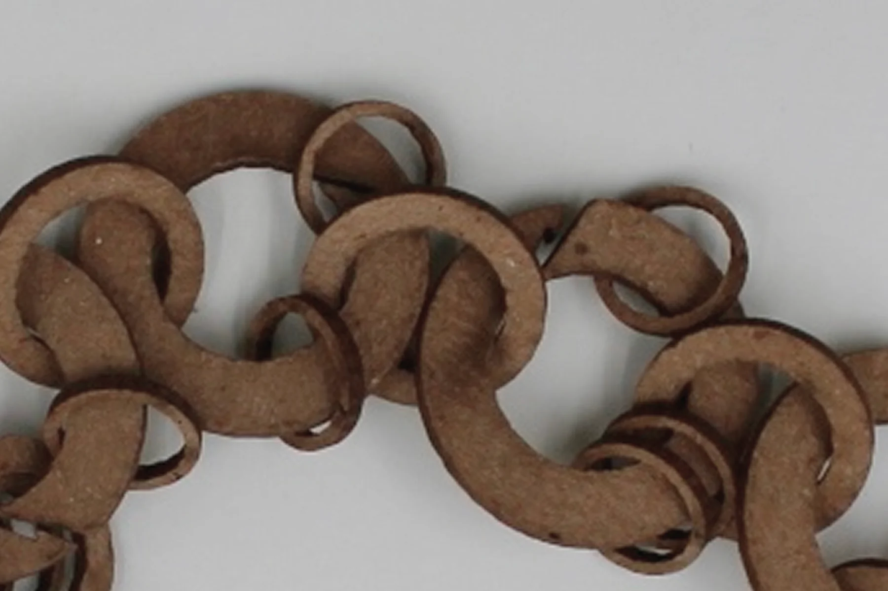
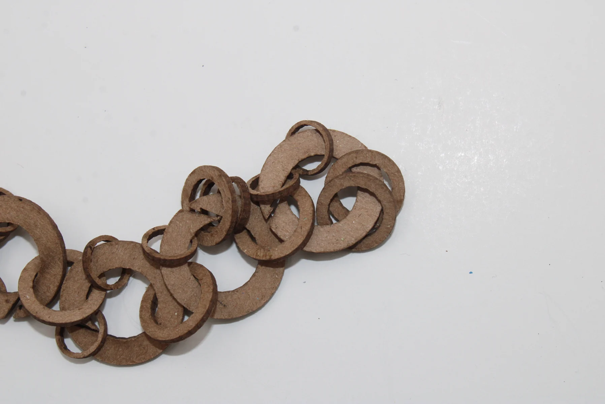

ETERNA BRACELET
2025

A WEARABLE DESIGN
The Eterna Bracelet reimagines a traditional fidget toy as a piece of everyday jewelry. Constructed from interconnected acrylic links and magnets, its chainmail-inspired design encourages subtle movement and tactile interaction.
Blending function with aesthetics, the bracelet transforms a sensory accessory into something both playful and wearable.

DETAILS
MATERIALS
Acrylic
Magnets
Spray paint
Super glue
DIMENSIONS
9 in x 2 mm x 1 in



FROM PROTOTYPE TO FINAL FORM
Before working with acrylic, the bracelet's interlocking structure was explored through a chipboard prototype. These early experiments helped develop the overlapping links and chainmail-inspired form that would eventually become the finished wearable piece.


